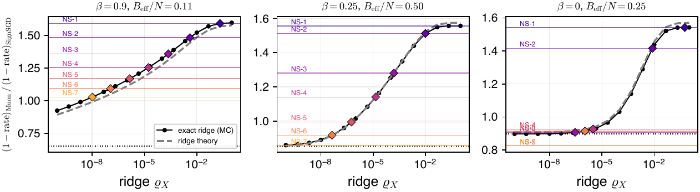
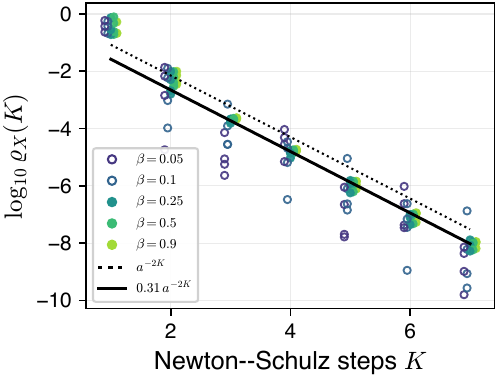
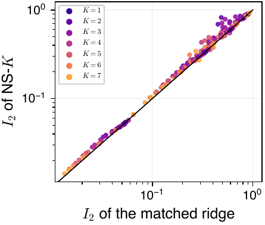
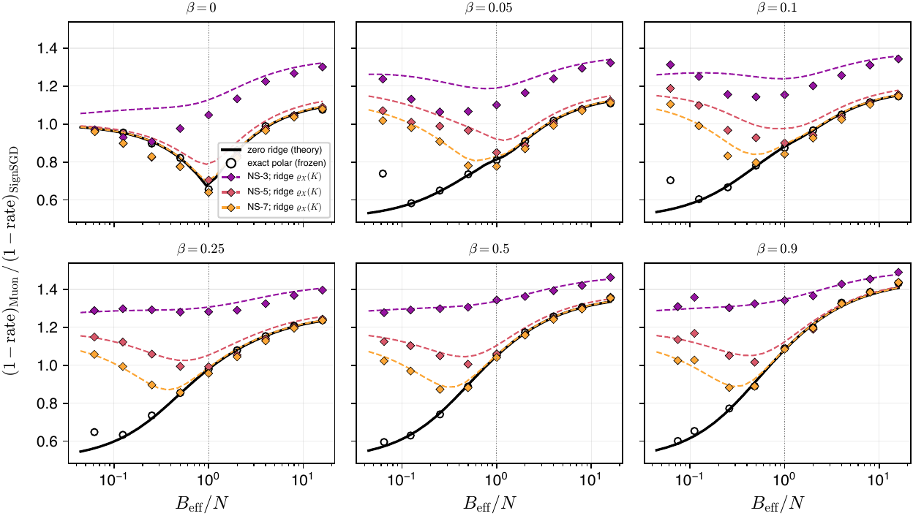
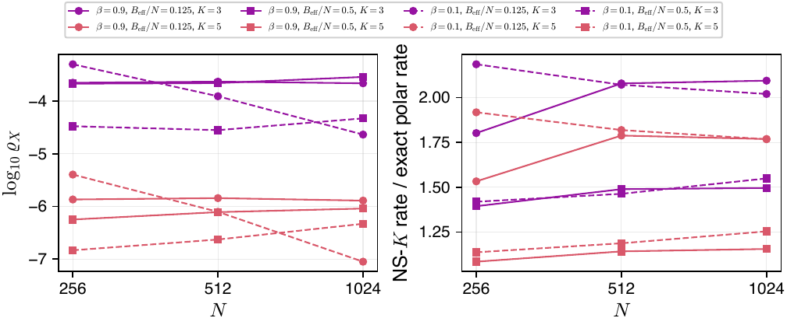
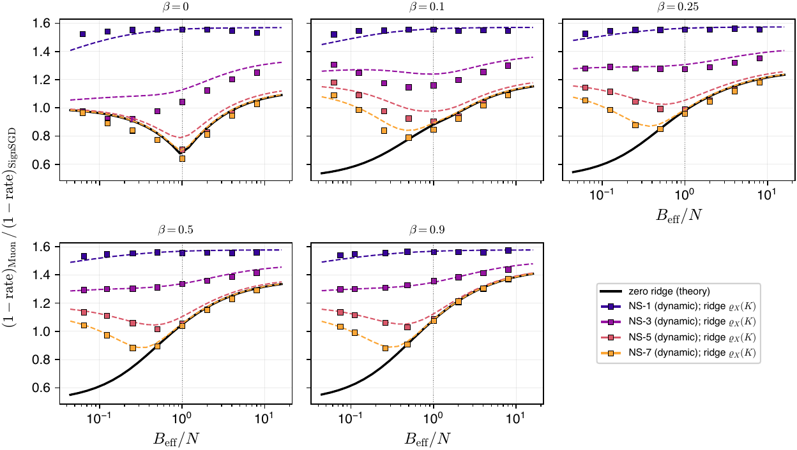
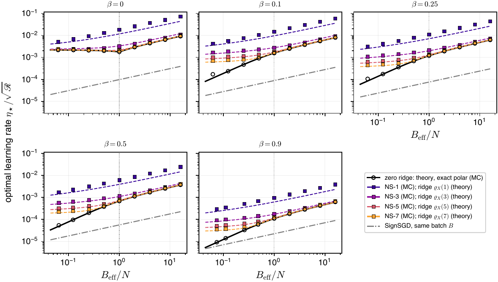

C Finite-ridge effects
The theory of the paper is proved for the regularized SignSVD map \(\Qridge\ridge\) of Definition SA.2, and its sharpest statements are made in the limit of vanishing ridge, which is exact whitening. Practical Muon does not whiten exactly: it applies a few Newton–Schulz steps, which amplify small singular values only up to a point. This appendix collects numerical evidence on what such imperfect whitening does, and on when a positive ridge describes it. Nothing in this appendix is used in a proof.
C.1 Newton–Schulz as a ridge
Fig. 6 shows that Muon with five Newton–Schulz steps (NS-5) and momentum behaves like a small positive ridge. This subsection measures, for every number of steps \(K\le7\), which ridge reproduces NS-\(K\) in the isotropic model, how accurately, and where the description fails. The calibration is made on a frozen error (Secs. C.1.1 and C.1.2) and then tested, without refitting, on the dynamics (Sec. C.1.3).
C.1.1 Frozen-error calibration: method
Model and updates. All runs use the square isotropic model of Appendix B, with \(N=512\) unless stated otherwise, momentum buffer \(M_t=\bmom M_{t-1}+(1-\bmom)G_t\) and \(\bmom\in\{0,0.05,0.1,0.25,0.5,0.9\}\). Every update we compare is a spectral function of the buffer. If \(M_t=\sum_k\sigma_k\,p_k\otimes r_k\) is a singular value decomposition, then the update is \(\sum_k\phi(\sigma_k)\,p_k\otimes r_k\) with
\[
\phi_{\rm polar}(\sigma)=1,\qquad
\phi_\varrho(\sigma)=\frac{\sigma}{\sqrt{\sigma^2+\varrho}},\qquad
\phi_{{\rm NS}\text{-}K}(\sigma)=p^{\circ K}\Big(\frac{\sigma}{\norm{M_t}_\F}\Big),
\]
where \(p(x)=ax+bx^3+cx^5\) with \((a,b,c)=(3.4445,-4.7750,2.0315)\) and \(p^{\circ K}\) is its \(K\)-fold composition. The last formula is exact: \(K\) Newton–Schulz iterations from \(X_0=M_t/\norm{M_t}_\F\) act on each singular value separately.
Units of the ridge. Newton–Schulz acts on \(M_t/\norm{M_t}_\F\), so we parametrize the ridge in the same units,
\[
\varrho=\varrho_X\,\norm{M_t}_\F^2 .
\]
In the frozen state of Appendix B, which has \(2\cR=1\), the normalized and the physical ridge coincide, and the measured \(\norm{M_t}_\F^2\) agrees with \(\sw2N^2/B=N^2/B_{\rm eff}\) to within \(5\%\) in every run (median ratio \(1.013\)). A fixed \(\varrho_X\) therefore corresponds to the normalized ridge \(\varrho_X N^2/B_{\rm eff}\), which is \(\varrho_X N\) times the mean eigenvalue of \(M_tM_t^\T\). The heuristic of Section 1.2 matches the small-\(\sigma\) slope \(a^K\) of \(\phi_{{\rm NS}\text{-}K}\) with the slope \(\varrho_X^{-1/2}\) of \(\phi_\varrho\), which gives \(\varrho_X=a^{-2K}\).
The frozen filter bank. The error is frozen at \(\Delta=\Id_N/\sqrt N\), and the buffer is burnt in and recorded exactly as in Appendix B: \(\lceil37/\log(1/\bmom)+N/B\rceil\) burn-in steps (none at \(\bmom=0\)), then \(T=\max(600,3N/B+300)\) recorded steps (\(T=400\) at \(\bmom=0\)). Because the error is frozen, the sequence \(M_t\) does not depend on the update rule. One double-precision singular value decomposition per step therefore gives, on the same random numbers, the frozen statistics of the exact polar factor, of NS-\(K\) for \(K=1,\dots,7\), and of exact ridges at the \(16\) values \(\varrho_X\in\{10^{-10},10^{-9.33},\dots,1\}\). For each update we record the drift \(\mathfrak d\), the integrated volatility \(\mathfrak v\) and the same-time volatility \(\mathfrak v_{\rm same}=\EE\norm{S_t}_\F^2\) with the estimators of Appendix B.
Two scale-free statistics. NS-\(K\) does not output singular values equal to one, so its updates differ from any ridge by an overall amplitude. Two statistics do not change when the update is multiplied by a constant:
\[
I_1=\frac{\mathfrak d^2}{\mathfrak v},\qquad I_2=\frac{\mathfrak v_{\rm same}}{\mathfrak v}.
\]
The first sets the rate at the optimal step, \(1-\text{rate}=2I_1\), and \(\pi\gamma N I_1\) is the ratio plotted in Fig. 6 (the Muon speedup). The second is the share of the volatility that comes from a single step.
Calibration. For each configuration \((N,B,\bmom)\) and each \(K\), the effective ridge \(\varrho_X(K)\) is the value at which the exact-ridge bank has the \(I_1\) of NS-\(K\), found by linear interpolation in \(\log\varrho_X\). This calibration uses no theory and no finite-\(N\) correction, because the bank and NS-\(K\) are evaluated on the same buffers. As a second, independent calibration we solve the same equation with the positive-ridge theory of Appendix SF, that is \(\mathfrak d_{\rm iso}(\varrho)\) and \(\mathfrak v_{\rm iso}(\varrho)\) at \(\varrho=\varrho_X\sw2N^2/B\). When the \(I_1\) of NS-\(K\) lies outside the range spanned by the ridges, we report that no ridge matches. The fitted ridge then predicts \(I_2\), which was not used in the fit.
Grid. At \(N=512\): \(\bmom\in\{0,0.05,0.1,0.25,0.5,0.9\}\) and \(B_{\rm eff}/N=2^k\), \(k=-4,\dots,4\), two seeds, \(108\) runs. For the dependence on \(N\): \(N\in\{256,1024\}\) at \(\bmom\in\{0.1,0.9\}\) and \(B_{\rm eff}/N\in\{1/8,1/2,2\}\), two seeds, \(24\) runs.
C.1.2 Frozen-error calibration: results

Calibration curves. Fig. 10 shows the mechanism. The rate statistic of the ridge increases monotonically from the exact polar value at \(\varrho_X\to0\) to the value of a linear update at large \(\varrho_X\), and each NS-\(K\) level crosses it once. The theory curve follows the bank to within a few percent; the gap at \(\bmom=0.9\), \(B=3\) is the finite-\(N\) drift bias of the polar factor at large \(N/B\) noted in Appendix B. At \(\bmom=0\) the NS-\(K\) levels with \(K\ge5\) lie below the exact polar value, which no ridge reaches.


|
\(K\) | bank: median [range] | theory: median | \(\log_{10}a^{-2K}\) | \(\log_{10}0.31a^{-2K}\) | \(I_2\): NS/ridge\(-1\) |
|
1 | \(-0.58\) \([-0.72,-0.10]\) | \(-1.37\) | \(-1.07\) | \(-1.58\) | \(+0.006\) |
| 2 | \(-2.34\) \([-2.80,-2.00]\) | \(-2.36\) | \(-2.15\) | \(-2.65\) | \(+0.11\) |
| 3 | \(-3.67\) \([-3.82,-3.63]\) | \(-3.75\) | \(-3.22\) | \(-3.73\) | \(+0.13\) |
| 4 | \(-4.78\) \([-5.03,-4.73]\) | \(-4.84\) | \(-4.30\) | \(-4.80\) | \(+0.10\) |
| 5 | \(-5.92\) \([-6.25,-5.81]\) | \(-6.03\) | \(-5.37\) | \(-5.87\) | \(+0.09\) |
| 6 | \(-7.01\) \([-7.35,-6.94]\) | \(-7.14\) | \(-6.45\) | \(-6.95\) | \(+0.07\) |
| 7 | \(-8.01\) \([-8.28,-7.89]\) | \(-8.19\) | \(-7.52\) | \(-8.02\) | \(+0.07\) |
The effective ridge. For \(\bmom\ge0.25\) and \(B_{\rm eff}<N\) the calibrated ridges collapse onto one law (Fig. 11, Table 2),
\[
\varrho_X(K)\approx0.31\,a^{-2K},\qquad a=3.4445,
\]
with a scatter of \(0.13\) in \(\log_{10}\varrho_X\) over the \(57\) calibrations with \(K\ge3\). A fit with a free slope gives \(-1.11\) decades per step, against \(-2\log_{10}a=-1.07\). The heuristic \(a^{-2K}\) has the right dependence on \(K\) and is a factor of about three too large. The theory calibration agrees with the bank calibration to within \(0.2\) in \(\log_{10}\varrho_X\) for \(K\ge2\), and lies slightly below it. At \(K=1\) the rate statistic of the ridge is nearly flat at large \(\varrho_X\) (one Newton–Schulz step on \(M_t/\norm{M_t}_\F\) is almost linear), so \(\varrho_X(1)\) is only weakly determined.

Where the ridge describes Newton–Schulz. Fig. 12 compares every frozen NS-\(K\) measurement with the ridge theory at the calibrated \(\varrho_X(K)\), with no further fitting.
- (i)For \(\bmom\ge0.25\) the calibrated ridge reproduces NS-3, NS-5 and NS-7 across the whole range \(1/16\le B_{\rm eff}/N\le16\), including the minimum near \(B_{\rm eff}/N\approx1/2\) and the gain over the exact polar factor at small \(B_{\rm eff}/N\).
- (ii)For \(B_{\rm eff}\ge N\) the effect of the ridge is small: for \(K\ge4\) the rate statistic of NS-\(K\) is within \(2\%\) of that of the exact polar factor, and the effective ridge is not determined there.
- (iii)For \(\bmom\in\{0.05,0.1\}\) a ridge still matches each NS-\(K\), and Newton–Schulz still improves on the exact polar factor at small batch, but the matched ridge scatters over one to two decades and is not monotone in \(K\) at \(\bmom=0.05\). With small momentum the weights \(\bmom^j\) of old batches separate the singular values of the buffer into widely spaced groups, and any ridge between two groups has the same effect.
- (iv)At \(\bmom=0\) no ridge describes NS-\(K\). For \(K\ge5\) and \(B<N\), NS-\(K\) is slower than the exact polar factor (by \(6\%\) at \(K=5\)), while every ridge is faster. The buffer is then a single minibatch gradient of rank \(\min(B,N)\), with no small singular values for a ridge to suppress, and the remaining effect of Newton–Schulz is the spread of its outputs over \([0.68,1.2]\), which adds volatility.
At the smallest batches with \(\bmom>0\) the frozen exact polar factor lies above the zero-ridge curve. There the oldest directions of the buffer have weights below the rank threshold \(10^{-13}\) of Appendix B, so the computed polar factor is itself a polar factor with a tiny ridge.
One Newton–Schulz step is SGD. In every panel the rate statistic decreases with \(K\), and NS-1 is the fastest. One Newton–Schulz step is nearly linear on \(M_t/\norm{M_t}_\F\), whose bulk singular values are of order \(N^{-1/2}\), so NS-1 is essentially momentum SGD with a normalized step. In the isotropic model there is nothing to precondition, and SGD is the most efficient of these updates: for nearly Gaussian gradient entries a linear update beats the sign update by the factor \(\pi/2\approx1.57\), and NS-1 sits close to this value for every \(\bmom\) and \(B_{\rm eff}/N\). In this model, taking the fewest steps therefore amounts to running SGD.
Consistency. The ridge fitted on \(I_1\) predicts the lag share \(I_2\) of NS-\(K\) to within about \(10\%\) (Fig. 11, right): NS-\(K\) has \(7\)–\(13\%\) more same-time volatility than the matched ridge for \(2\le K\le7\), and the same at \(K=1\). The excess is the volatility added by the spread of the Newton–Schulz outputs, which a ridge does not have.

Dependence on the dimension. At \(\bmom=0.9\) the calibrated \(\varrho_X\) does not depend on \(N\):
\[
\log_{10}\varrho_X(5)=-5.87,-5.84,-5.89,\qquad
\log_{10}\varrho_X(3)=-3.65,-3.63,-3.66
\]
at \(N=256,512,1024\) and \(B_{\rm eff}/N=1/8\) (Fig. 13). The Frobenius-normalized ridge is therefore the right unit, and the normalized ridge \(\varrho_X N^2/B_{\rm eff}\) grows with \(N\) at a fixed \(B_{\rm eff}/N\). Accordingly the gain of NS-5 over the exact polar factor grows with \(N\), from \(1.09\) to \(1.14\) to \(1.16\) at \(B_{\rm eff}/N=1/2\). At \(\bmom=0.1\) the calibrated ridge drifts with \(N\), as the scatter in (iii) suggests.
C.1.3 Dynamical validation
Protocol. The dynamical runs follow the protocol of Fig. 6, described in Appendix B. Each run starts from a Gaussian \(\Delta_0\) with \(\cR(0)=6.25\) (\(4\) at the smallest batches), warms the buffer at \(W_0\) for the burn-in of the frozen runs, and uses the constant step \(\eta=4\mathfrak d/\mathfrak v\) built from the frozen \((\mathfrak d,\mathfrak v)\) of the same NS-\(K\), so that its floor is near \(\cR_\star=1\). Runs last \(7/\kappa\) to \(9/\kappa\) steps, \(\kappa=8\mathfrak d^2/\mathfrak v\), between \(2\cdot10^2\) and \(3.5\cdot10^5\) steps. Newton–Schulz is computed by matrix products in single precision, as in practice, not by the spectral formula. The grid is \(N=512\), \(\bmom\in\{0,0.1,0.25,0.5,0.9\}\), \(B_{\rm eff}/N=2^k\) with \(k=-4,\dots,3\), \(K=1,\dots,7\) and two seeds, \(560\) runs; the runs with different \(K\) share their initial errors. The rate is read from the recursion fit of Appendix B, and we report the rate statistic \((1-\text{rate})_{\rm Muon}/(1-\text{rate})_{\rm SignSGD}\) on the \(\sqrt B\) scale of the main text.

Results. The dynamics reproduce the frozen calibration, and the calibrated ridge predicts the dynamical rates where the frozen calibration said it would (Fig. 14).
- (i)The dynamical rate statistic agrees with the frozen \(\pi\gamma NI_1\) of the same NS-\(K\) to \(0.8\%\) on average and \(4.5\%\) at most, over all \(280\) pairs of configuration and \(K\); the two seeds differ by \(0.3\%\) in the median. Single-precision Newton–Schulz therefore behaves as its double-precision spectral formula.
- (ii)For \(\bmom\ge0.25\) the ridge theory at \(\varrho_X(K)\) predicts the dynamical rate of NS-\(K\) to \(0.6\%\) on average (\(2.7\%\) at most) for \(B_{\rm eff}/N\le1/4\), and to \(2.1\%\) on average at \(B_{\rm eff}/N=1/2\). For \(B_{\rm eff}\ge N\) it is \(2.6\%\) too fast on average (\(8.6\%\) at most): there NS-\(K\) is close to the exact polar factor, and the spread of its outputs, which a ridge does not have, is the larger effect.
- (iii)For \(\bmom=0.1\) the error is \(4.8\%\) on average and up to \(11\%\), and for \(\bmom=0\) it is \(6.5\%\) on average and up to \(15\%\), with the ridge predicting too fast a rate, as the frozen results anticipated.
C.1.4 Learning rates
Sec. 3.1 gives the optimal learning rate \(\eta_\star/\sqrt{\fRisk}=2\mathfrak d/\mathfrak v\) of exact whitening. Fig. 15 shows the same quantity for NS-\(K\), measured on the frozen bank (\(N=512\)), against the ridge theory at \(\varrho_X(K)\).

Finite Newton–Schulz flattens the small-batch learning rate. With momentum and exact whitening, the learning rate grows like \(B\) for \(B_{\rm eff}<N\) (slope \(0.95\) in \(\log B_{\rm eff}\) between \(B_{\rm eff}/N=1/16\) and \(1\)), because the volatility of the whitened weak directions of the buffer grows like \(N^2/B\). A ridge caps the gain on those directions: the slope falls to \(0.25\)–\(0.34\) for NS-5 at every \(\bmom\in[0.1,0.9]\), and at \(B_{\rm eff}/N=1/16\) the NS-5 learning rate is \(6\)–\(8\) times that of exact whitening. The picture is then close to that at \(\bmom=0\), where the rank-\(B\) gradient has no weak directions, NS-5 and exact whitening nearly coincide, and the learning rate is nearly flat in \(B\) for \(B<N\). For \(B_{\rm eff}\ge N\) the ridge matters little, and every curve rises with slope between \(\tfrac12\) and \(0.6\), as in Sec. 3.1. NS-\(K\) stays above SignSGD at the same batch in every configuration.
Amplitude. The calibration matches the scale-free statistic \(I_1=\mathfrak d^2/\mathfrak v\), while the learning rate \(2\mathfrak d/\mathfrak v\) also carries the overall amplitude of the update. For \(K\ge3\) the NS-\(K\) learning rate is between \(0.92\) and \(1.16\) times the ridge theory at \(\varrho_X(K)\) over all \(54\) frozen configurations at \(N=512\). NS-1 is nearly linear, \(S_t\approx a\,M_t/\norm{M_t}_\F\), a smaller update than the ridge map at \(\varrho_X(1)\), and its learning rate is \(1.15\)–\(1.64\) times higher. The exact-polar points at the smallest \(B_{\rm eff}/N\) for \(\bmom\in\{0.1,0.25\}\) lie above the zero-ridge curve, for the rank-threshold reason of Sec. C.1.2.
Scope. These measurements are in the isotropic model with the standard Muon coefficients. The calibration concerns the rate at the optimal step and the lag share; it does not claim that NS-\(K\) and the ridge have the same drift or volatility separately, since they differ by an overall amplitude.